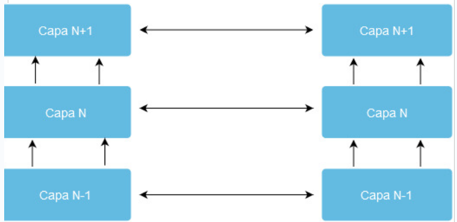

Antes de realizar una definición exhaustiva de lo que es una red de ordenadores es conveniente que tengamos ciertos conceptos básicos claros. Por un lado, hay que establecer lo que entendemos por comunicación, ya que es la base para la creación de las redes informática que conocemos.
La comunicación.
Es el trasvase de información entre dos entes. Para que se produzca la comunicación, antes hay que establecer una serie de reglas y procedimientos para que sea realizada. Tendremos que establecer el idioma, el medio (voz, carta, teléfono, etc..), el acuse de recibo, identificar el emisor y el receptor y otras necesidades en función del tipo de comunicación que se quiera establecer.
En la siguiente imagen se observan una serie de elementos que conforman la comunicación:
- Fuente es el origen del cual procede la información. Normalmente es una persona.
- Emisor es el elemento que se encarga de transformar la información proporcionada por la fuente para adaptarla al canal o medio por el cual se transmitirá.(transductor)
- Canal o medio es el elemento por el cual se transmite la información. Este puede ser algún tipo de cable o, en el caso de comunicaciones inalámbricas, el aire.
- Ruido es cualquier perturbación sobre el medio que afecte a la información. Esto hace que la información llegue con modificaciones.
- Receptor es el elemento que se encarga de extraer la información del canal y transformarla para que pueda ser interpretada correctamente por el destinatario. (transductor)
- Destino es el lugar o entidad que consume la información. Normalmente es una persona.
Una vez que tenemos claro el concepto de comunicación podemos establecer qué es la telecomunicación. Según la UIT (Unión Internacional de Telecomunicaciones) se define formalmente como toda transmisión, emisión o recepción de signos, señales, imágenes, sonidos o informaciones de cualquier tipo que se transmiten por hilos, medios ópticos, radioeléctricos u otros sistemas electromagnéticos.
De esta forma también podemos establecer que una red de transmisión de datos es una estructura formada por determinados medios físicos y lógicos (programas) desarrollada para satisfacer las necesidades de comunicación de una determinada zona geográfica. Se trata pues de un soporte que permite la conexión de diversos equipos informáticos con el objetivo de intercambiar informaciones.: es el trasvase de información entre dos entes. Para que se produzca la comunicación, antes hay que establecer una serie de reglas y procedimientos para que sea realizada. Tendremos que establecer el idioma, el medio (voz, carta, teléfono, etc..), el acuse de recibo, identificar el emisor y el receptor y otras necesidades en función del tipo de comunicación que se quiera establecer.